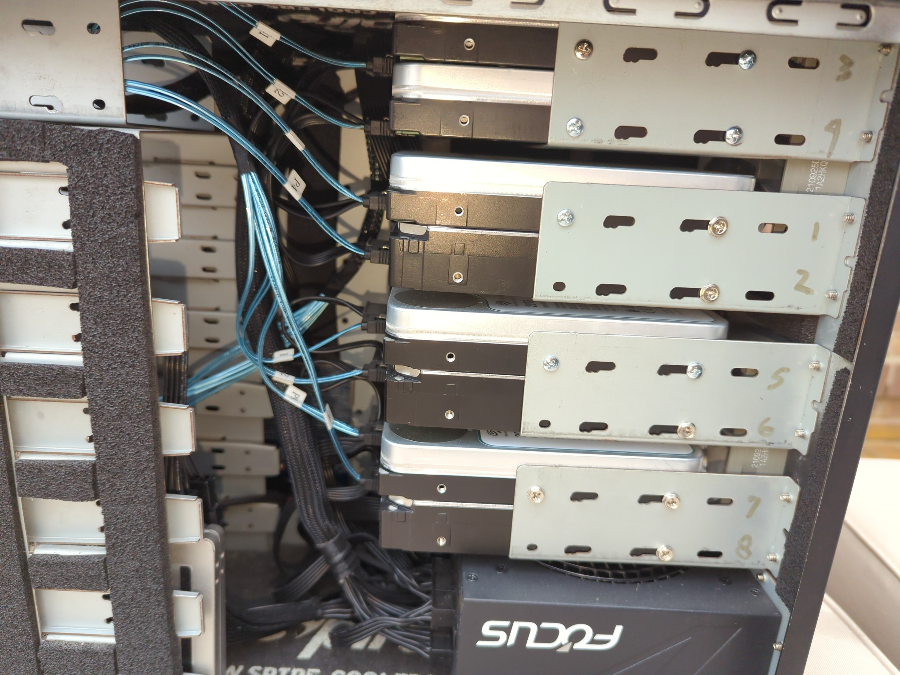
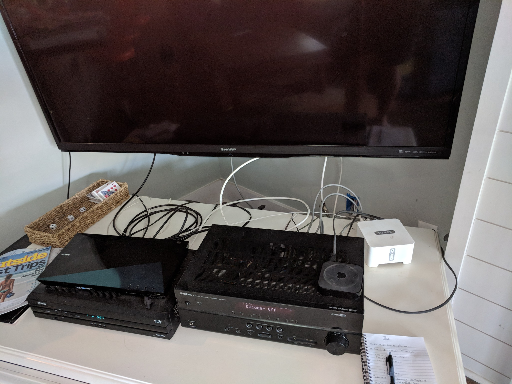
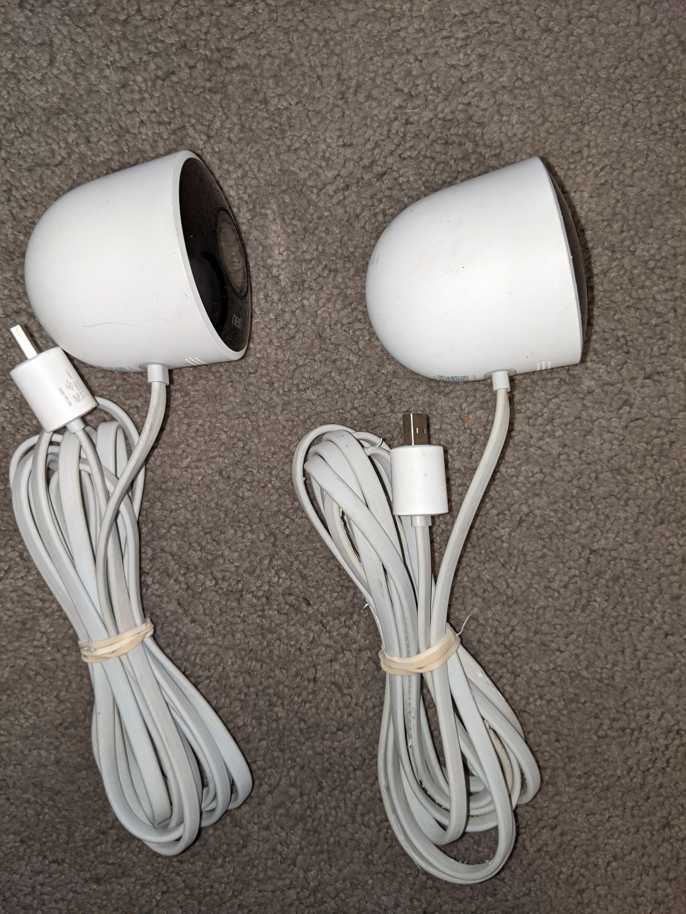
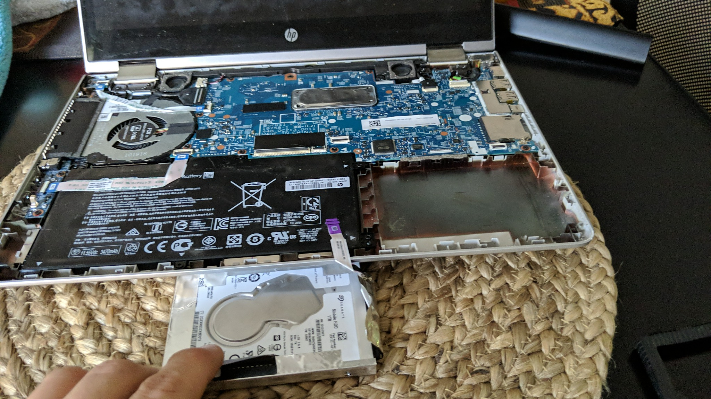
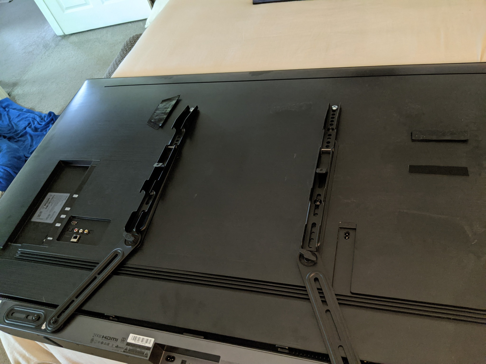
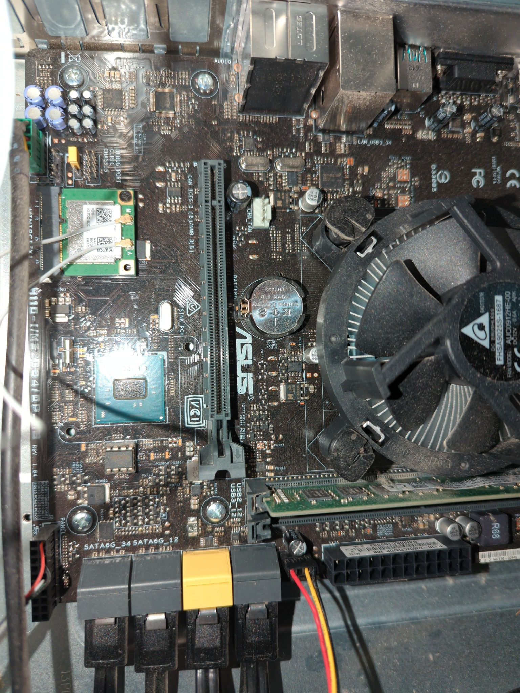

For your business
Infrastructure, support, and security that keep operations moving.
Network design, servers, workstations, cloud services, backups, communications, continuity planning, and strategic IT consulting.
IT consulting • infrastructure • networking • support
Franklyn Solutions helps businesses and homeowners deploy, improve, secure, and maintain the technology they depend on every day. From network setup and server builds to automation, troubleshooting, upgrades, and long-term infrastructure planning, the goal stays simple: make your tech actually work the way it should.


Core services
This pass keeps the sharper modern visual style, fixes the oversized header behavior, and leans harder into real Franklyn Solutions project photography so the site feels more credible and more personal.
For your business
Network design, servers, workstations, cloud services, backups, communications, continuity planning, and strategic IT consulting.

For your home
Wi‑Fi, entertainment, smart home integration, cameras, remote access, work-from-home setups, privacy, backups, and device optimization.

Connectivity & growth
ISP guidance, structured rollout, performance tuning, remote access, equipment recommendations, and scalable architecture.
What Franklyn Solutions can handle
Featured work
This section is now using a stronger mix of premium build photography, repair shots, office support, and installed environments so visitors can immediately tell the work is real.

High-performance systems
From compact workstations and custom desktop builds to storage-heavy systems and enterprise-class hardware, the site should show technical range without feeling generic.






Project snapshots
These cards give the site more depth without making it feel cluttered, and they can be rotated or expanded easily in later revisions.

Hands-on hardware work, upgrades, and performance-focused system builds.

Desktop diagnosis, parts replacement, cleanup, and practical repair work.

Internal hardware evaluation, upgrades, and deeper technical service.

Networked devices, rack-style setups, and scalable hardware planning.

Finished deployments that still fit the more polished visual tone of the site.

Structured cable work, hardware integration, and the behind-the-scenes setup.
Why Franklyn Solutions
Franklyn Solutions is positioned around practical expertise: the ability to understand the problem, design the right solution, and then actually implement it well. That means strategy when needed, but also the hands-on ability to build, deploy, repair, optimize, and support the systems behind the plan.
Client feedback
“Wonderful service. Friendly, extremely knowledgeable, and not afraid to help with all the little things too.”
Jacqueline Tracy, Ph.D.“They took all the guesswork out of researching, purchasing, and configuring the equipment. Business is running smooth again.”
Jay Pease, JPEG LLC“Fast, reliable, and efficient. Their service is stellar and they are my go-to for technology needs.”
Fritz Brenner, Two Sails Marketing LLCContact
This version stays static and easy to edit so you can keep using the same fast workflow you liked on the ManCamp South project.